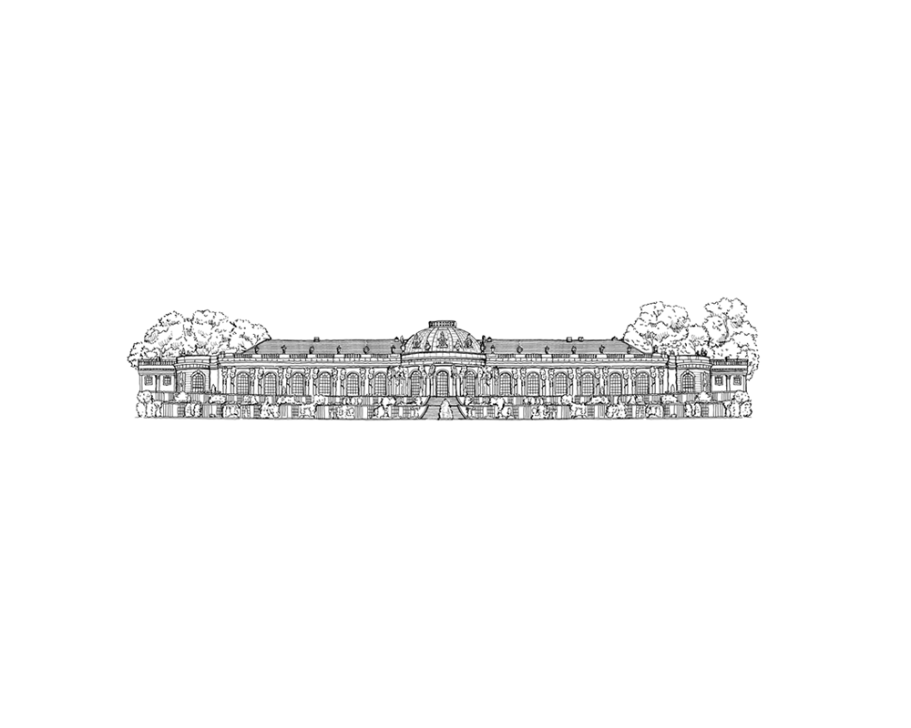

SansSouci Investments, LP is a private pooled investment vehicle
founded and led by Benjamin F. Bruns. The fund is managed by Bruns Capital Strategies, LLC.
Fund subscriptions are offered on a biannual basis by invitation or referral.
For inquiries regarding the fund please contact investor relations at the email provided below.

invest@brunscapital.com